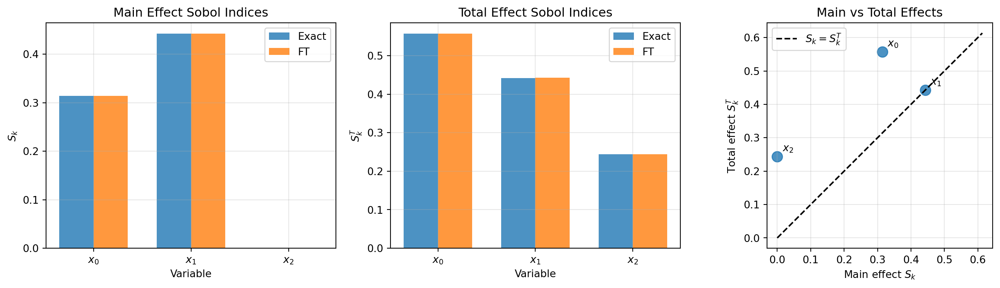
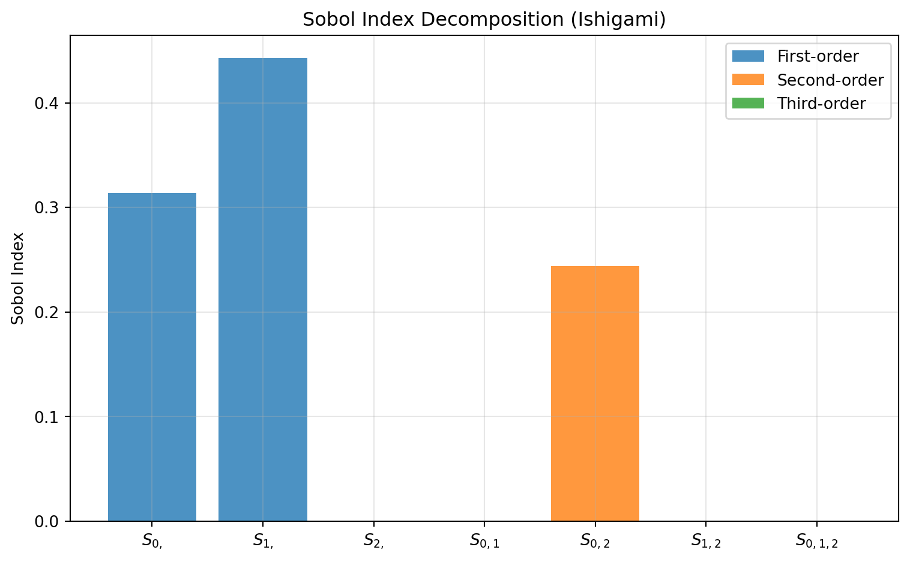

import numpy as np
import matplotlib.pyplot as plt
from itertools import chain, combinations
from pyapprox.util.backends.numpy import NumpyBkd
bkd = NumpyBkd()
np.random.seed(42)
def all_nonempty_subsets(n):
"""Generate all non-empty subsets of {0, ..., n-1}."""
return chain.from_iterable(
combinations(range(n), r) for r in range(1, n + 1)
)FunctionTrain Sensitivity: Practical Usage
PyApprox Tutorial Library
Computing Sobol indices analytically with FunctionTrainSensitivity
TipDownload Notebook
Learning Objectives
After completing this tutorial, you will be able to:
- Use the
FunctionTrainSensitivityclass to compute Sobol indices - Verify index properties (\(\sum S_u = 1\), \(\SobolT{k} \geq \Sobol{k}\))
- Visualize and interpret sensitivity indices
- Apply FT sensitivity analysis to practical problems
Prerequisites
Complete FunctionTrain Sensitivity (Math) before this tutorial.
Setup
The FunctionTrainSensitivity Class
from pyapprox.probability import UniformMarginal
from pyapprox.benchmarks import ishigami_3d
from pyapprox.surrogates.functiontrain import (
create_pce_functiontrain,
PCEFunctionTrain,
ALSFitter,
)
from pyapprox.surrogates.functiontrain.statistics import (
FunctionTrainMoments,
FunctionTrainSensitivity,
)
# Create a test FT
marginals = [UniformMarginal(-1.0, 1.0, bkd) for _ in range(3)]
ft = create_pce_functiontrain(marginals, max_level=3, ranks=[2, 2], bkd=bkd)
pce_ft = PCEFunctionTrain(ft)
# Moments must be created first
moments = FunctionTrainMoments(pce_ft)
# Then sensitivity
sensitivity = FunctionTrainSensitivity(moments)Complete Workflow Example
Step 1: Load the Ishigami Benchmark
We use the Ishigami function, a standard benchmark with genuine variable interactions and known analytical Sobol indices:
\[ f(x_1, x_2, x_3) = \sin(x_1) + a\sin^2(x_2) + b\,x_3^4\sin(x_1), \quad x_k \sim \mathcal{U}[-\pi, \pi] \]
benchmark = ishigami_3d(bkd)
func = benchmark.function()
prior = benchmark.prior()
gt = benchmark.ground_truth()
marginals = prior.marginals()
nvars = 3Step 2: Analytical Sobol Indices
The Ishigami function has closed-form variance components:
\[ D = \frac{a^2}{8} + b\frac{\pi^4}{5} + \frac{b^2 \pi^8}{18} + \frac{1}{2}, \quad V_1 = \frac{1}{2}\!\left(1 + \frac{b\pi^4}{5}\right)^{\!2}, \quad V_2 = \frac{a^2}{8}, \quad V_3 = 0 \]
Variable \(x_3\) has zero main effect but a non-zero total effect through the \(x_1\)–\(x_3\) interaction term \(V_{13} = 8b^2\pi^8/225\).
S_exact = bkd.to_numpy(gt.main_effects).ravel()
T_exact = bkd.to_numpy(gt.total_effects).ravel()Step 3: Create and Fit FunctionTrain
# Rank-3, degree-12 FT with oversampling ratio 5
ft_init = create_pce_functiontrain(
marginals=marginals,
max_level=12,
ranks=[3, 3],
bkd=bkd,
)
n_train = 5 * ft_init.nparams()
train_samples = prior.rvs(n_train)
train_values = func(train_samples)
# Fit
fitter = ALSFitter(bkd, max_sweeps=50, tol=1e-14)
result = fitter.fit(ft_init, train_samples, train_values)
fitted_ft = result.surrogate()Step 4: Compute Sensitivity Indices
# Create statistics objects
pce_ft = PCEFunctionTrain(fitted_ft)
moments = FunctionTrainMoments(pce_ft)
sensitivity = FunctionTrainSensitivity(moments)
# Get all indices
S_ft = bkd.to_numpy(sensitivity.all_main_effects())
T_ft = bkd.to_numpy(sensitivity.all_total_effects())Note that \(S_3 \approx 0\) (no main effect) but \(T_3 > 0\) (interaction with \(x_1\)).
Step 5: Visualize Results
from pyapprox.tutorial_figures._function_train import plot_ft_sobol
fig, axes = plt.subplots(1, 3, figsize=(14, 4))
plot_ft_sobol(S_exact, S_ft, T_exact, T_ft, nvars, axes)
plt.tight_layout()
plt.show()
Verifying Sobol Index Properties
Property 1: Sum of All Indices Equals 1
# Compute all Sobol indices for small d
all_S = {}
for u in all_nonempty_subsets(nvars):
all_S[u] = float(sensitivity.sobol_index(list(u))[0])Property 2: Total Effect Equals Sum of Containing Subsets
for k in range(nvars):
T_k_direct = float(sensitivity.total_effect_index(k)[0])
T_k_sum = sum(s for u, s in all_S.items() if k in u)Property 3: Total Effect >= Main Effect
for k in range(nvars):
S_k = S_ft[k]
T_k = T_ft[k]
assert T_k - S_k >= -1e-10Sobol Index Decomposition
Since the Ishigami function already contains interactions, we can visualize the full decomposition. With \(d = 3\) there are \(2^3 - 1 = 7\) indices.
from pyapprox.tutorial_figures._function_train import plot_ft_decomposition
fig, ax = plt.subplots(figsize=(8, 5))
plot_ft_decomposition(all_S, ax)
plt.tight_layout()
plt.show()
The dominant interaction index \(S_{0,2}\) reflects the \(b\,x_3^4 \sin(x_1)\) term. Variable \(x_1\) (\(S_2\)) has the largest main effect but also a large interaction contribution. Variable \(x_2\) (\(S_1\)) has a large main effect and no interactions.
Practical Guidelines
When to Use FT Sensitivity Analysis
Advantages:
- Analytical: No Monte Carlo sampling needed
- All indices: Efficiently compute main + total effects
- Exact (up to fitting error): No MC variance
Considerations:
- Fitting quality affects results
- All general \(S_u\) is exponential in \(d\)
- Works best for low-rank structure
Recommended Workflow
# Recommended workflow for sensitivity analysis:
# 1. Fit FunctionTrain to target function
# 2. Wrap with PCEFunctionTrain
# 3. Create FunctionTrainMoments
# 4. Create FunctionTrainSensitivity
# 5. Compute indices: all_main_effects(), all_total_effects(), sobol_index()
# 6. Verify properties: sum of all S_u ~ 1, T_k >= S_kKey Takeaways
- FunctionTrainSensitivity provides
main_effect_index(),total_effect_index(),sobol_index() - Workflow: FT → PCEFunctionTrain → Moments → Sensitivity
- Verify properties: \(\sum S_u = 1\) and \(\SobolT{k} \geq \Sobol{k}\)
- Interactions: \(\SobolT{k} - \Sobol{k}\) measures interaction strength
- Sum of first-order: \(\sum_k \Sobol{k} < 1\) indicates interactions
Exercises
(Easy) Change the Ishigami parameters to \(a = 7, b = 0.05\). How do the total effects of \(x_1\) and \(x_3\) change relative to \(b = 0.1\)?
(Medium) Create a 5-variable function where only variables 0 and 1 interact. Compute all indices and verify the structure.
(Challenge) The Sobol g-function \(f = \prod_k (|4x_k - 2| + a_k)/(1 + a_k)\) with \(x_k \in [0,1]\) has a kink that is hard for polynomials. Fit a FT and measure how many more parameters you need compared to the Ishigami function for the same accuracy.
Next Steps
Continue with:
- Sensitivity Analysis (Concept) — Review variance decomposition fundamentals